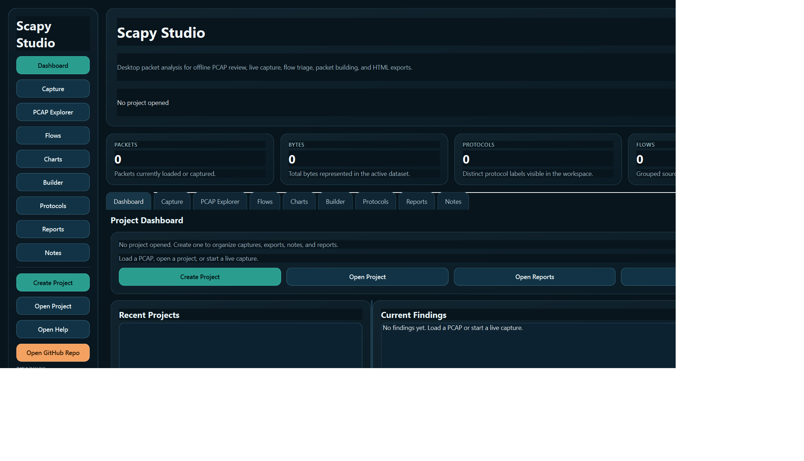
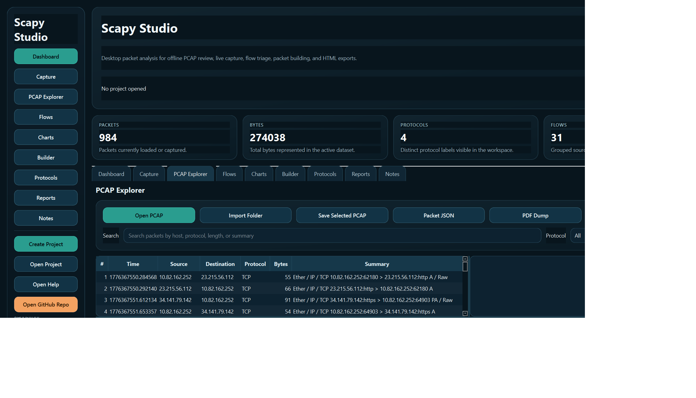

Scapy Studio Help
Scapy Studio provides a desktop workflow for loading packet captures, browsing decoded packet data, reviewing grouped flows, building test packets, probing live interfaces, and exporting reports. This help site documents the public GitHub build and its recommended Windows startup path.
Offline AnalysisOpen `.pcap` and `.pcapng` files and inspect decoded packet details, hex, and findings.
Live CaptureUse Scapy with Npcap on Windows to validate interfaces and stream packets into the GUI.
ExportsGenerate HTML reports, packet JSON, findings CSV, sessions JSON, and project ZIP archives.
ProjectsKeep captures, notes, exports, and reports grouped inside `.scapyproj` folders.
Overview
The main window is organized into a left command rail and a right workspace. The header provides quick access to import and reporting actions, while the metric cards summarize the active capture set. The tabs then break the work into Dashboard, Capture, PCAP Explorer, Flows, Charts, Builder, Protocols, Reports, and Notes.
Setup
Run StartMe.bat from the repository root. The launcher uses generic repo-relative variables and avoids hard-coded machine paths.
- Creates
.venv if needed
- Installs the editable Scapy repo and the desktop dependencies from
requirements-studio.txt
- Compiles the
scapy_studio package
- Checks for Npcap and downloads the latest installer if it is missing
- Starts the desktop GUI
Python 3.11+ is required. Npcap is optional for offline PCAP work, but it is required for live capture on Windows.
Workflow
- Create or open a project if you want captures, notes, and exports organized in one location.
- Open a PCAP file or import a folder of captures.
- Use the PCAP Explorer to inspect packet rows, decoded fields, and hex output.
- Review the Flows and Charts workspaces for grouped traffic summaries and trends.
- Use Builder when you need to assemble a local TCP or UDP packet for inspection.
- Export reports and archives from the Reports workspace.
Screenshots
The public repository includes fresh GUI screenshots captured from the current desktop build.

Dashboard
Project summary, current findings, quick actions, and KPI cards.

PCAP Explorer
Packet list, findings, decoded detail, and hex output with the refreshed UI.
Exports
Scapy Studio supports several export paths for analyst deliverables and handoff material.
- HTML report with Plotly charts and packet summaries
- Packet JSON export
- Findings CSV export
- Session summary JSON export
- Project ZIP archive export